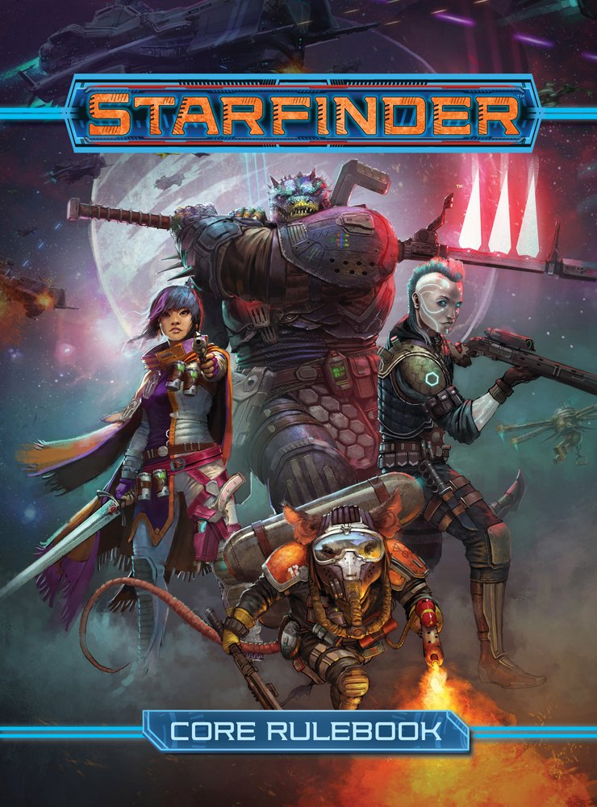
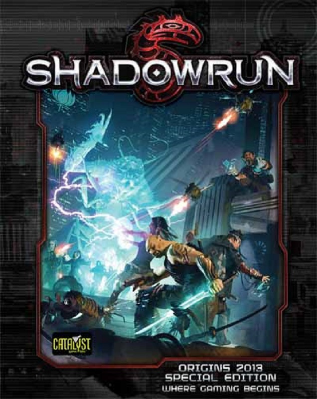
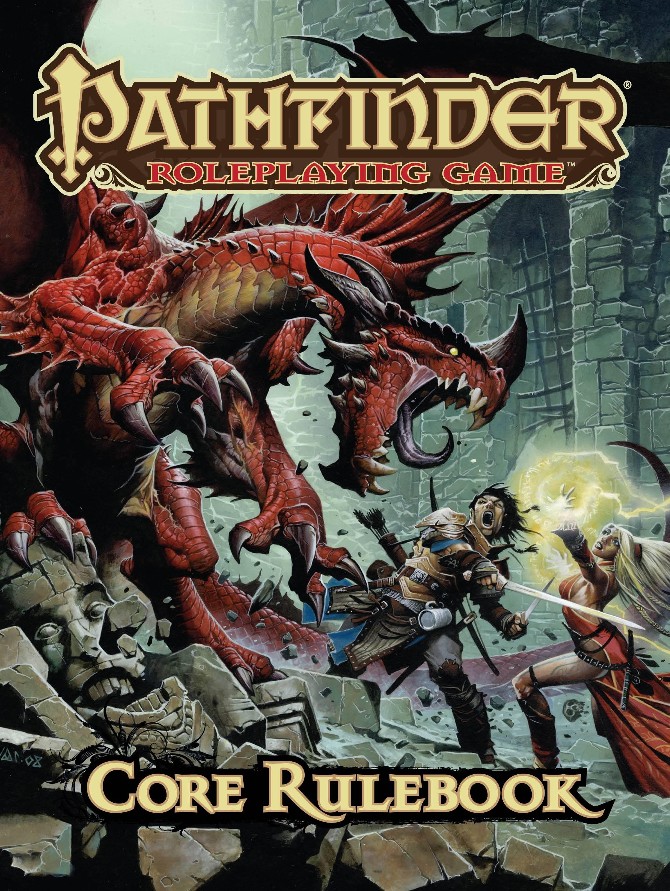

My name is Daniel, I was born in Kirkland, Washington in October of 1987. When I was 21 I joined the Army to get funding for school in 2009. After being honorably discharged from the military in 2012 I began attending college courses at Edmonds Community College. I spent a couple years studying to become a chemical engineer before eventually returning to the job industry to work in telecommunications using the experience I obtained in the military. After a couple years of bouncing between telecommunications jobs I finally discovered CodeFellows and decided I wanted to use part of the remaining GI Bill benefits I have to begin a career in an industry which has always interested me. So here I am, learning to code.
Languages:
- HTML
- CSS
- Javascript
Favorite Hobbies and Top 3:
Tabletop RPGs
-
 Starfinder is the new future setting version of Pathfinder, I've yet to have a chance to be part of a campaign however just having gone through the core rule book I'm willing to place it in my top 3.
-
 Shadowrun is based in a cyberpunk universe is a little different from normal cyberpunk because the creators took cyberpunk and splashed a little bit of fantasy RPG into their game.
-
 Pathfinder is an improved version of classic RPGs like DD in my eyes. It contains a lot of the same mechanics as the games that came before it but elaborates on many that needed more content.
Video Games
-

Faster Than Light is a game in which you play the captain of a federation cruiser trying to escape a rebellion.
-

Fallout 4 takes place in a post nuclear future hundred of years after the bombs fell.
-
Star Citizen is a space simulator game currently in development that aims to be a completely player driven open universe containing hundreds of thousands of individual players.
Snowboarding
-

Mount Baker, Washington
-

Crystal Mountain, Washington
-

Whistler, BC, Canada